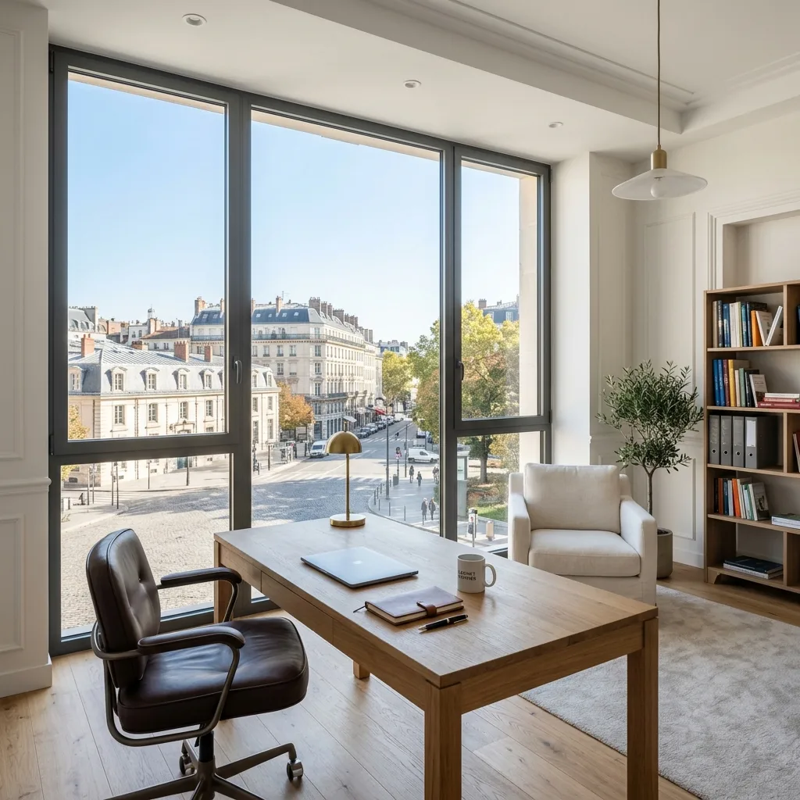

Limiter les apports solaires.
Moins d’énergie solaire qui entre par le vitrage, c’est un levier pour limiter l’échauffement de la pièce. Le résultat dépend aussi du bâtiment, de la ventilation et du climat.
Pose de film solaire anti-chaleur
Derrière une baie vitrée ou une façade exposée, le soleil peut rendre une pièce difficile à vivre. Nous étudions vos vitrages, sélectionnons le film solaire adapté et réalisons la pose pour mieux équilibrer chaleur, lumière et confort.

Garder le lien avec l’extérieur.
Mieux maîtriser ce qui traverse le verre.
Un traitement à étudier sans remplacer la menuiserie.
Apports solaires, teinte et lumière visible.
Conseil, fourniture, application et entretien.
Ce qui change dans votre quotidien
Le film solaire est une membrane technique appliquée sur le verre. Selon sa construction, il réfléchit, absorbe et laisse passer différentes parts du rayonnement. Nous choisissons la réponse en fonction de ce que vous vivez dans la pièce.
Moins d’énergie solaire qui entre par le vitrage, c’est un levier pour limiter l’échauffement de la pièce. Le résultat dépend aussi du bâtiment, de la ventilation et du climat.
Une teinte adaptée peut réduire l’éblouissement sur un écran ou près d’une baie vitrée. Nous regardons le moment de la journée et le niveau de lumière que vous souhaitez conserver.
De nombreuses références solaires filtrent une grande partie des UV. La lumière visible et la chaleur participent aussi au vieillissement : la protection se raisonne dans son ensemble.
Comprendre la protection UV ↗Clair, neutre, teinté ou réfléchissant
Un film solaire n’impose pas automatiquement une vitre sombre ou un miroir extérieur. La gamme permet de rechercher un rendu discret, une teinte neutre ou une réflexion plus affirmée.
Nous confrontons l’apparence souhaitée à la transmission lumineuse et au rejet solaire de la référence envisagée. Un film plus foncé n’est pas systématiquement le meilleur choix pour votre espace.

Des repères, pas un chiffre unique
Le film agit sur les apports solaires du vitrage. La température de l’air, la sensation près de la fenêtre et la consommation d’une climatisation ne décrivent pas le même résultat.
Une étude de deux bureaux en climat tempéré rapporte environ 2 à 3 °C de moins au printemps, par temps ensoleillé. Ce résultat est propre au cas étudié ; ce n’est pas une moyenne garantie pour chaque pose.
Comprendre les mesures et leurs conditions ↗Surface et composition du vitrage, exposition, ombrages, climat, usage de la pièce et équipements. Ces éléments donnent du sens à la préconisation.

Pose intérieure ou extérieure
La face de pose dépend du verre et de la référence. Un double vitrage traité, une fenêtre de toit et une grande façade ne se raisonnent pas de la même façon.
Nous vérifions la compatibilité, les échauffements différentiels possibles, les prescriptions d’application et l’accès. La qualité de la pose fait partie de la solution.
Conseiller, fournir, poser
Une pièce trop chaude, des reflets, une vitrine exposée ou un besoin d’intimité : nous mettons des mots précis sur le résultat attendu.
Composition du verre, orientation, dimensions, ombrages et conditions d’accès : ces éléments orientent la sélection et la face de pose.
Nous présentons le rendu, les bénéfices, les limites et le périmètre de pose. Le devis correspond à votre projet et à la solution retenue.
Préparation du support, découpe et application selon les prescriptions du fabricant. Nous transmettons les consignes de séchage et d’entretien.
Votre installateur en Auvergne-Rhône-Alpes
Décrivez le lieu, l’exposition et ce qui vous gêne. Nous préparons avec vous une solution solaire adaptée, fournie et posée.
Des réponses pour décider
Le film limite les apports solaires par les vitrages. Il ne refroidit pas activement l’air et ne traite pas toutes les sources de chaleur du bâtiment. Son intérêt se juge avec la configuration, la ventilation et les équipements existants.
Oui, c’est un usage à étudier, notamment lorsqu’une baie reçoit beaucoup de soleil ou crée un éblouissement. Nous vérifions le vitrage, l’exposition et le niveau de lumière que vous souhaitez conserver.
Pas systématiquement. La face de pose se choisit avec le vitrage, les traitements existants, l’accès et les préconisations du fabricant. La compatibilité reste la première étape.
Le périmètre se définit avec l’exposition, l’usage des pièces et le rendu de la façade. Nous vous aidons à prioriser les vitrages concernés et à anticiper les différences d’aspect.
La garantie dépend de la référence, du support et des conditions de pose. Nous vous précisons les documents et les conditions applicables à la solution retenue.
Un besoin, plusieurs façons d’y répondre

Une approche spécifique pour la toiture, les accès et les supports.
Découvrir
Température, ressenti, énergie : les bons repères pour comparer.
DécouvrirLe diagnostic du vitrage et les étapes de votre projet.
DécouvrirGuides pour bien choisir
Composition du verre, couches spécifiques et face de pose : les points à faire vérifier avant un film solaire.